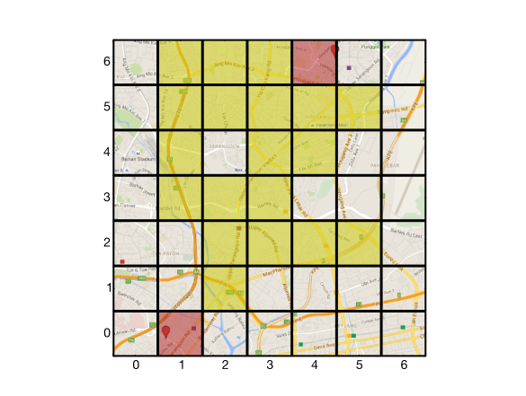

Working with a Singaporean startup, I designed and prototyped an algorithm for carpooling, matching drivers and passengers.
Skills employed: algorithm design, algorithm prototyping, report writing, GIS, Google Maps API, Python (numpy, scipy, matplotlib), project design, Linux
The initial coarse matching stage for the algorithm. The red grid cells show the driver start and end points, the yellow cells show where he can likely pick people up for carpooling, overlaid onto a region of Singapore.
I worked with a new startup in Singapore, helping to build a website that sets up carpools, automatically matching drivers to passengers. The market leader is a website with tens of thousands of users, but is simply a database which allows the users themselves to find a match.
This new website will allow users to input their start and end points and travel times, acceptable diversion times, and any other requirements, and have a list of the top suggestions for a match, for both drivers and passengers.
The company required an algorithm that matched the drivers to the passengers. The algorithm needed to match acceptable start times and positions with end times and positions, taking into account travel times, acceptable diversion times and distances. The algorithm also needed to include the capacity for multiple passengers, the requirements of passengers and drivers (such as smoking or not) and do this matching over the whole of Singapore.
The algorithm needed to find multiple close matches within seconds, and be able to deal with tens of thousands of users, with up to many hundreds of users at once.
The algorithm was a two stage approach - an initial, coarse matching based on times and positions through a subdivision of the geographical areas of Singapore, and once a reasonable number of matches have been found, a more precise matching through the Google Maps API, confirming the validity of the coarse matches
I provided design documentation for the algorithm, and prototype code. I am also providing ongoing support for the implementation.
The complexity of the problem was greatly reduced by combining two free-to-access standard methods - using the Google maps API for the route finding, and a standard MySQL database for storing the results. There was no need for a full GIS (geographical information system) database as the complexity of the routes and mapping were handled by the Google API. MySQL databases are very mature, well established and appropriate for this sort of data, and there are very standard methods for switching them with other, more parallel databases should the load become too high.
This solution is reasonably scaleable - the Google Maps APIs have a free quota of several hundred thousand queries a day.
The startup was pleased with the algorithm, and although the website isn’t completely built, we’re confident that the algorithm will work successfully.
We are planning to work together on implementing new features to the website.